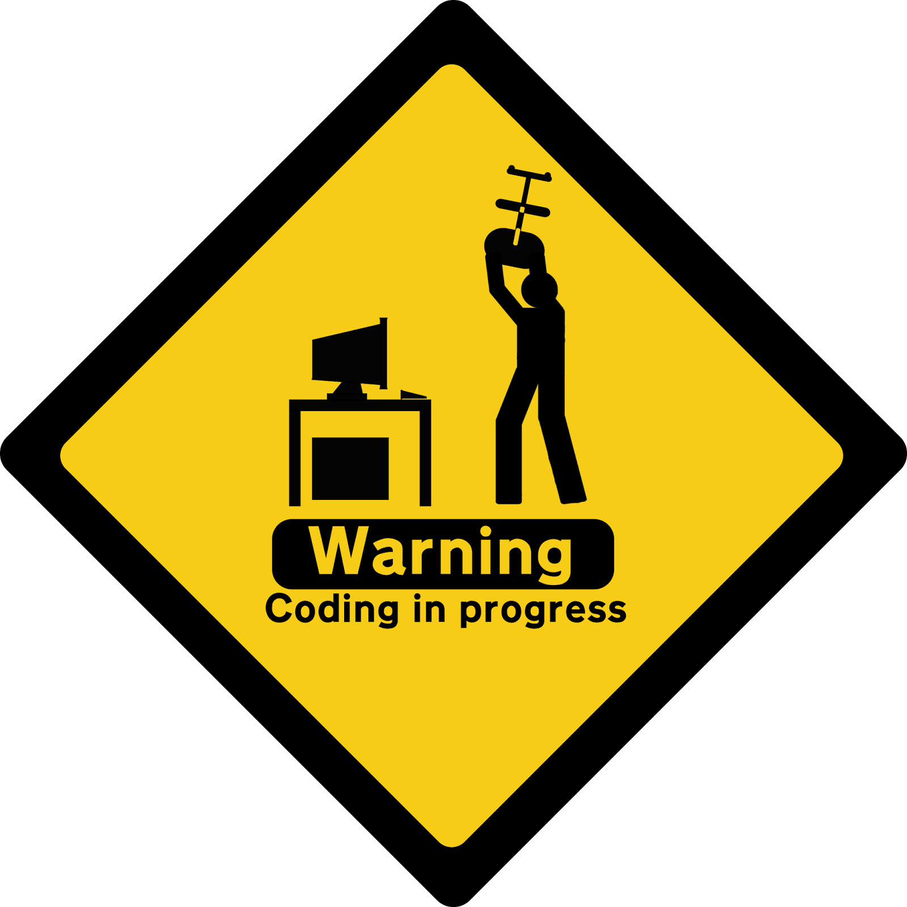

Projects
Active Inactive Finished Dead
All-In-One SOC Repository
NewPipe Playlist Extractor Repository
Webpage Repository
Vinyl Database Manager Repository
AV: Street and Package Image Recognition
AV: Obstacle Image Recognition
Basic Server-Client Setup in C
Mount & Blade SoftwareHub Repository
ASCII Adventure Repository
Posts

Profile

Name: Quasolaris
Major: Computer Science
Occupation: Cyber Security
GitHub ProfileContact [Mail]
Buy Me A Coffee!